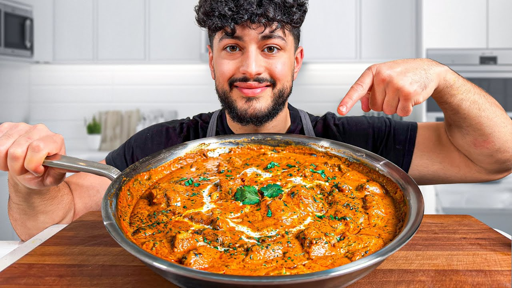

Serves 4
| Course | Main Dish |
| Categories | Chicken, Rice |
| Collections | The Golden Balance |
| Source | The Golden Balance – YouTube |
| Notes | see “Notes” below |

Ingredients and amounts are taken from the video's description (the creator's posted recipe, scaled to 4 servings). The method below is reconstructed from the video narration. A few cooking specifics weren't stated on camera — see "Gaps in this export."
1 bay leaf
1 cinnamon stick
10 cardamom (cloves/pods)
2 Tbsp coriander seed
2 Tbsp cumin seed
1 Tbsp black peppercorns
1 Tbsp cloves
2 tsp turmeric
1 Tbsp red chili powder (Kashmiri)
1 Tbsp fenugreek leaves (kasuri methi)
2 lb boneless, skinless chicken thighs, cut into large cubes
1/2 cup yogurt
5–7 cloves garlic, mashed
1-inch nub ginger, grated
1/2 lemon, juiced
1 Tbsp mustard oil
1 green chili (optional, "for vibes" — not traditional)
Salt, to taste (season the chicken directly)
20 oz peeled plum tomatoes (e.g. San Marzano)
16 oz raw unsalted cashews, roasted
1 tsp salt
1 tsp sugar
2 tsp fenugreek leaves (kasuri methi)
2 Tbsp ghee
3 cardamom pods
1 bay leaf
1 Tbsp cumin seeds
2 cups basmati sella rice, washed
3 cups water
Salt, to taste (1–2 tsp)
2 Tbsp butter
1 tsp red chili powder
1 green chili
All of the tomato–cashew sauce base
The roasted marinated chicken
1/2–3/4 cup heavy cream, plus a little extra for drizzling
1–2 Tbsp more butter
1 tsp red chili powder
1–2 tsp garam masala
Pinch fenugreek leaves (kasuri methi)
Toast the whole masala spices (bay leaf, cinnamon, cardamom, coriander seed, cumin seed, peppercorns, cloves) in a dry pan over medium heat just until fragrant and lightly smoky. Do not burn.
Let cool, then blend to a powder.
Stir in the turmeric, red chili powder, and fenugreek leaves. Set aside some of this blend to finish the dish later.
In a bowl, combine the yogurt, mashed garlic, grated ginger, lemon juice, mustard oil, green chili (if using), and a portion of the masala blend (enough to turn the mixture a light orange-red). Mix well.
Add the cubed chicken thighs and season directly with salt to taste, making sure every piece is coated.
Marinate. (The restaurant marinates 12 hours; the video doesn't state a home marinating time.)
Preheat a hot oven with good air circulation (roast setting) to mimic a tandoor.
Spread the marinated chicken in a single, spaced-out thin layer on a rack set over a tray so air reaches it from all sides.
Roast until charred at the edges but still juicy and cooked through. (No temperature or time was given on camera; cook to a safe internal temperature.)
In a deep pot over medium heat, add the peeled plum tomatoes with 1 tsp salt and 1 tsp sugar. Bring up to temperature and let them slow-cook.
Separately, toast the raw cashews in a dry pan over fairly high heat for a couple of minutes until they take on a little color and lose their rawness.
Add the toasted cashews to the tomatoes along with 2 tsp fenugreek leaves. Slow-cook together until soft and combined.
Blend, then strain — twice — for an ultra-smooth texture.
Heat the ghee in a pan. Add the cardamom pods, bay leaf, and cumin seeds; toast until fragrant.
Add the washed rice and toss until every grain is coated and glossy.
Add 3 cups water and a hefty pinch of salt. Bring to a gentle bubble.
When it's bubbling at the sides, drop to low heat and cover. Cook to package instructions (usually 15–20 minutes).
Kill the heat and let it sit a few minutes, then fluff.
In a hot pan over medium heat, melt 2 Tbsp butter. Bloom 1 tsp red chili powder in the butter for a deep orange color, and add 1 green chili.
Add the strained tomato–cashew mixture and let it cook a few minutes to absorb the butter.
Stir in the roasted chicken.
Add 1/2–3/4 cup heavy cream and mix in — it will lighten the color and add body.
Finish with 1–2 Tbsp more butter, another 1 tsp red chili powder, and 1–2 tsp garam masala. Stir until silky.
Drizzle with a little extra heavy cream and a pinch of fenugreek leaves. Serve with the cumin rice.
Cut the chicken into large cubes (not thin) so it chars on the outside while staying moist inside.
The sauce base is deliberately just tomatoes + roasted cashews — no onion, garlic, or ginger paste.
Go easy on the lemon in the marinade; too much acid can make the chicken stringy.
Butter chicken traditionally isn't spicy; the green chilies are the creator's personal addition.
Grinding whole kasuri methi to a fine powder (as the restaurant does) blends in more smoothly than using large leaves.
Gap in this export: Oven temperature and roasting time for the marinated chicken (only "really hot," roast function, cook to doneness)
Gap in this export: How long the chicken was marinated for the home version (restaurant: 12 hours)
Gap in this export: Amount of masala blend to use in the marinade vs. reserve for finishing
Gap in this export: Exact quantity of heavy cream (given as a 1/2–3/4 cup range)